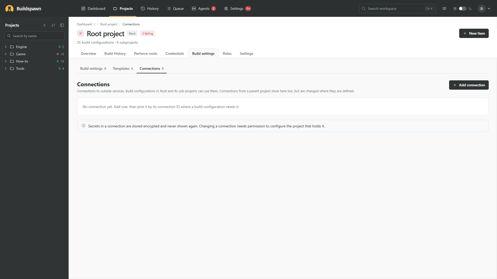
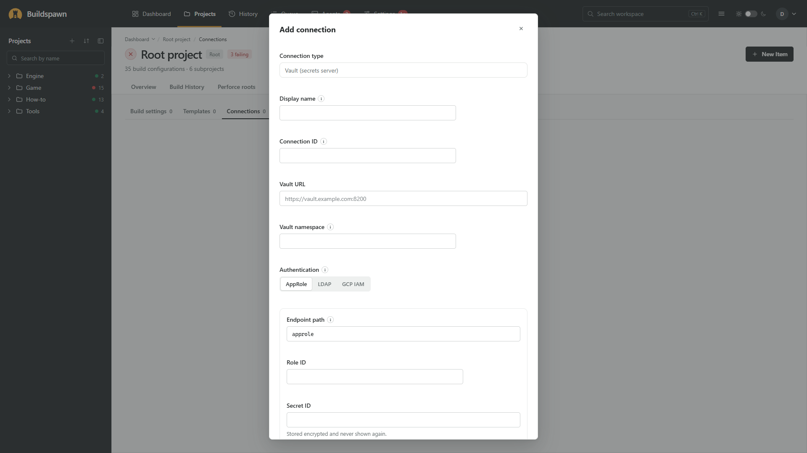
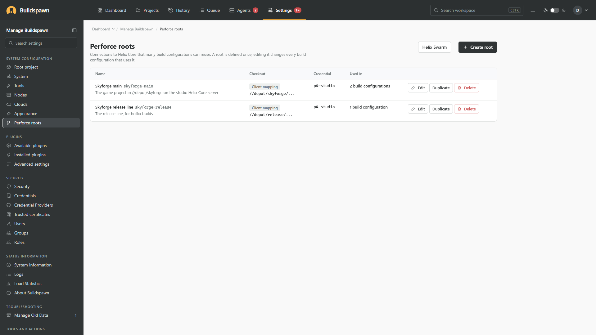

Global connections and Vault
Connections set on the root project are shared by every project. Set up a service once, such as HashiCorp Vault or a Perforce server, and every build configuration can use it.
The root project sits above all your projects. What you set there is passed down to every project and build configuration on the server. To open it, click Settings › Root project, or Root project in any breadcrumb.
The root project's Build settings tab has a menu on the left:
| Item | What it holds |
|---|---|
| Build settings | Build steps, parameters, post-build actions and build wrappers that every build configuration on the server gets. |
| Templates | Templates every project can use. See Templates. |
| Connections | Connections to outside services, such as HashiCorp Vault. |
| Perforce roots | Perforce server connections that many build configurations reuse. |
| Credentials | User names, passwords, keys and tokens that builds and connections use. |
Global connections
A connection is a link to an outside service, with its address and sign-in details. Every build configuration in the project where it is defined, and in all projects below, can pick it by its connection ID. A connection on the root project is therefore global.

- Connections from a parent project show in the list of a child project too, but you change them where they are defined.
- Secrets in a connection are stored encrypted and never shown again.
- To change a connection you need permission to configure the project that holds it.
Vault
HashiCorp Vault keeps secrets such as signing keys, console SDK passwords and store tokens in one safe place. With a Vault connection, a build reads the secret from Vault at the moment it runs. The secret is never saved in Buildspawn.
Add a Vault connection
- Open Root project › Build settings › Connections and click Add connection.
- For Connection type, choose HashiCorp Vault.
- Type a Display name, for example
Studio Vault. Buildspawn makes the Connection ID from it. Jobs refer to the connection by this ID, so don't change it later. - Type the Vault URL, for example
https://vault.example.com:8200. - If you use Vault Enterprise namespaces, type the Vault namespace. Otherwise leave it empty.
- Choose how Buildspawn signs in to Vault under Authentication (see the table below) and fill in its fields.
- Click Test connection. When the test passes, click Save.

| Authentication | Fields | Use it when |
|---|---|---|
| AppRole | Endpoint path (where AppRole is mounted in Vault, approle by default), Role ID and Secret ID. | The usual choice for a server. Your Vault administrator gives you the role ID and secret ID. |
| LDAP | Endpoint path (where LDAP is mounted in Vault), User name and Password. | Your Vault signs in with your company directory. |
| GCP IAM | Role, an optional Service account, the Credentials (the agent's own identity from the metadata server, or a pasted service account key in JSON) and the Endpoint path (gcp by default). | Your agents run on Google Cloud. Each agent then signs in with its own Google identity. |
The secret ID and passwords are stored encrypted and never shown again.
Use a Vault secret in a build
Once the connection exists, a build configuration reads secrets through a parameter that points into Vault. How to add one is in Secrets and Vault references.
Perforce roots
A Perforce root is a connection to a Helix Core server with a workspace mapping, defined once and reused by many build configurations. Editing a root changes every build configuration that uses it.

- Open Settings › Perforce roots and click Create root.
- Give it a name, pick the server credential, and set the workspace mapping or stream.
- Click Save. The root can now be picked in any build configuration's Version control settings.
The full Perforce setup is in Perforce. The Helix Swarm button sets up the code review server.
Related pages
- Management pages › Root project
- Credentials and Credential Providers
- Perforce operations rules on the System page
- Settings overview
Tips
- Put a connection on the lowest project that needs it. A connection on the root project is visible to everybody who can configure any project.
- Use one Vault connection per Vault server, and limit what it can read with Vault's own policies.
- Before you delete a Perforce root, check Used in. Build configurations that use it stop working.